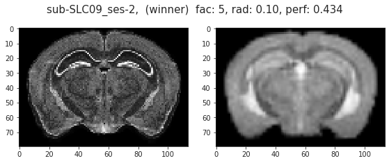

November ??th, 2021 (register N162)¶
Motivation: ??
# HIDE CODE
import os
import sys
import nibabel as nib
import networkx as nx
from time import time
from pprint import pprint
from copy import deepcopy as dc
from os.path import join as pjoin
from myterial import orange, blue_grey
from IPython.display import display, IFrame, HTML
from matplotlib.colors import rgb2hex, to_rgb
import matplotlib.pyplot as plt
import seaborn as sns
# set style & no interpolalation
import matplotlib
matplotlib.rcParams['image.interpolation'] = 'none'
sns.set_style('whitegrid')
%matplotlib inline
# tmp & extras dir
git_dir = pjoin(os.environ['HOME'], 'Dropbox/git')
tmp_dir = pjoin(git_dir, 'jb-Ca-fMRI/tmp')
extras_dir = pjoin(git_dir, 'jb-Ca-fMRI/_extras')
lfr_dir = pjoin(os.environ['HOME'], 'Documents/workspaces/lfr/binary_overlapping')
# GitHub
sys.path.insert(0, pjoin(git_dir, '_Ca-fMRI'))
from register.atlas import make_tree_graph
from register.parcellation import Parcellation
from analysis.hierarchical import Hierarchical
from analysis.fourier import *
from analysis.bootstrap import *
from analysis.svinet import *
from analysis.group import *
from analysis.lfr import *
from utils.render import *
from utils.plotting import *
from model.mouse import Mice
from model.configuration import Config
# warnings
import warnings
warnings.filterwarnings('ignore', category=DeprecationWarning)
mice = Mice(Config(256, 0, 100), full_load=True, load_parcel=True, load_allen=True)
ROI lookup not found, time to run organize_func() . . .
combine metadata not found, time to run cat_data() . . .
# mice.parcel.fit_parcel(True)
[PROGRESS] fit columnar: initiated
Intel(R) Extension for Scikit-learn* enabled (https://github.com/intel/scikit-learn-intelex)
[PROGRESS] kmeans fit: done
[PROGRESS] save 2D 10um: done
[PROGRESS] 2d --> 3d: done
[PROGRESS] fill gaps: done
[PROGRESS] save 3D 10um: done
[PROGRESS] downsample: done
num regions, left: 768, right: 768 region id diff, r - l: Counter({768: 768})
[PROGRESS] fit columnar: done
[PROGRESS] 'cortex_100um.npy' saved at /home/hadi/Documents/Ca-fMRI/processed/norm-global_parcel-columnar_n-256*0/parcellation
[PROGRESS] 'cortex-top_100um.npy' saved at /home/hadi/Documents/Ca-fMRI/processed/norm-global_parcel-columnar_n-256*0/parcellation
[PROGRESS] 'subcortex_100um.npy' saved at /home/hadi/Documents/Ca-fMRI/processed/norm-global_parcel-columnar_n-256*0/parcellation
[PROGRESS] 'subcortex-l_100um.npy' saved at /home/hadi/Documents/Ca-fMRI/processed/norm-global_parcel-columnar_n-256*0/parcellation
[PROGRESS] 'subcortex-r_100um.npy' saved at /home/hadi/Documents/Ca-fMRI/processed/norm-global_parcel-columnar_n-256*0/parcellation
[PROGRESS] 'regions-top_100um.npy' saved at /home/hadi/Documents/Ca-fMRI/processed/norm-global_parcel-columnar_n-256*0/parcellation
[PROGRESS] 'regions-cortex_100um.npy' saved at /home/hadi/Documents/Ca-fMRI/processed/norm-global_parcel-columnar_n-256*0/parcellation
[PROGRESS] 'nonzero-idxs_parcel2d-flat_100um.npy' saved at /home/hadi/Documents/Ca-fMRI/processed/norm-global_parcel-columnar_n-256*0/parcellation
[PROGRESS] 'nonzero-idxs_parcel2d-top_100um.npy' saved at /home/hadi/Documents/Ca-fMRI/processed/norm-global_parcel-columnar_n-256*0/parcellation
[PROGRESS] 'nonzero-idxs_parcel3d_100um.npy' saved at /home/hadi/Documents/Ca-fMRI/processed/norm-global_parcel-columnar_n-256*0/parcellation
[PROGRESS] 'region-idxs_parcel2d-flat_100um.npy' saved at /home/hadi/Documents/Ca-fMRI/processed/norm-global_parcel-columnar_n-256*0/parcellation
[PROGRESS] 'region-idxs_parcel2d-top_100um.npy' saved at /home/hadi/Documents/Ca-fMRI/processed/norm-global_parcel-columnar_n-256*0/parcellation
[PROGRESS] 'region-idxs_parcel3d_100um.npy' saved at /home/hadi/Documents/Ca-fMRI/processed/norm-global_parcel-columnar_n-256*0/parcellation
[PROGRESS] 'shape_parcel2d-flat_100um.npy' saved at /home/hadi/Documents/Ca-fMRI/processed/norm-global_parcel-columnar_n-256*0/parcellation
[PROGRESS] 'shape_parcel2d-top_100um.npy' saved at /home/hadi/Documents/Ca-fMRI/processed/norm-global_parcel-columnar_n-256*0/parcellation
[PROGRESS] 'shape_parcel3d_100um.npy' saved at /home/hadi/Documents/Ca-fMRI/processed/norm-global_parcel-columnar_n-256*0/parcellation
[PROGRESS] save results: done.
from register.register import *
reg = Register(mice)
kwargs = {
'types': ['SyN', 'ElasticSyN', 'SyNAggro'],
'grads': [0.15, 0.20, 0.25, 0.3, 0.32, 0.34, 0.35, 0.37, 0.38, 0.39, 0.40, 0.5, 0.9],
'syn_bins': [64, 32, 16],
'aff_bins': [13, 20, 32],
'aff_rates': [0.2, 0.6, 0.8],
'aff_metric': 'mattes',
'syn_metric': 'mattes',
'mi_q': 0.5,
'n_seeds': 10,
}
kwargs
{ 'types': ['SyN', 'ElasticSyN', 'SyNAggro'], 'grads': [ 0.15, 0.2, 0.25, 0.3, 0.32, 0.34, 0.35, 0.37, 0.38, 0.39, 0.4, 0.5, 0.9 ], 'syn_bins': [64, 32, 16], 'aff_bins': [13, 20, 32], 'aff_rates': [0.2, 0.6, 0.8], 'aff_metric': 'mattes', 'syn_metric': 'mattes', 'mi_q': 0.5, 'n_seeds': 10 }
reg.set_mode('bold')
reg.mi_base = None
key = 'sub-SLC08_ses-2'
indiv = mice.T1w[key].load_ants()
indiv *= mice.mask3d[key].load_ants()
indiv = reg._prepare(indiv)
results = reg.fit_register(
name=key,
moving=indiv,
fixed=reg.nissl,
save_results=True,
**kwargs
)

save_obj(results['df'], f"fit_{key}_{now()}", tmp_dir, 'df')
params = {
'seed': 0,
'type': 'SyN',
'grad': 0.34,
'syn_bin': 32,
'aff_bin': 13,
'aff_rate': 0.2,
}
cond = functools.reduce(
lambda x, y: x & y,
[df[k] == v for k, v in params.items()],
)
df = results['df'].copy()
df_sub_main = df.loc[cond]
df_sub_main
results['perf']
_df = df.loc[df['metric'] == 'sym']
_df.iloc[[_df['score'].argmax()]]
| seed | type | grad | syn_bin | aff_bin | aff_rate | metric | score | |
|---|---|---|---|---|---|---|---|---|
| 48193 | 2 | ElasticSyN | 0.2 | 64 | 13 | 0.8 | sym | 0.948029 |
params = dict(_df.iloc[_df['score'].argmax()])
params.pop('metric')
params.pop('score')
cond = functools.reduce(
lambda x, y: x & y,
[df[k] == v for k, v in params.items()],
)
df_sub = df.loc[cond]
df_sub
| seed | type | grad | syn_bin | aff_bin | aff_rate | metric | score | |
|---|---|---|---|---|---|---|---|---|
| 48168 | 2 | ElasticSyN | 0.2 | 64 | 13 | 0.8 | mi | 0.504729 |
| 48169 | 2 | ElasticSyN | 0.2 | 64 | 13 | 0.8 | ovp_MOp | 0.998219 |
| 48170 | 2 | ElasticSyN | 0.2 | 64 | 13 | 0.8 | sym_MOp | 0.956446 |
| 48171 | 2 | ElasticSyN | 0.2 | 64 | 13 | 0.8 | ovp_MOs | 0.998294 |
| 48172 | 2 | ElasticSyN | 0.2 | 64 | 13 | 0.8 | sym_MOs | 0.979730 |
| 48173 | 2 | ElasticSyN | 0.2 | 64 | 13 | 0.8 | ovp_SS | 0.998292 |
| 48174 | 2 | ElasticSyN | 0.2 | 64 | 13 | 0.8 | sym_SS | 0.973034 |
| 48175 | 2 | ElasticSyN | 0.2 | 64 | 13 | 0.8 | ovp_VISC | 1.000000 |
| 48176 | 2 | ElasticSyN | 0.2 | 64 | 13 | 0.8 | sym_VISC | 0.957265 |
| 48177 | 2 | ElasticSyN | 0.2 | 64 | 13 | 0.8 | ovp_VIS | 0.994318 |
| 48178 | 2 | ElasticSyN | 0.2 | 64 | 13 | 0.8 | sym_VIS | 0.943218 |
| 48179 | 2 | ElasticSyN | 0.2 | 64 | 13 | 0.8 | ovp_AI | 0.942282 |
| 48180 | 2 | ElasticSyN | 0.2 | 64 | 13 | 0.8 | sym_AI | 0.986667 |
| 48181 | 2 | ElasticSyN | 0.2 | 64 | 13 | 0.8 | ovp_PTLp | 1.000000 |
| 48182 | 2 | ElasticSyN | 0.2 | 64 | 13 | 0.8 | sym_PTLp | 0.983607 |
| 48183 | 2 | ElasticSyN | 0.2 | 64 | 13 | 0.8 | ovp_TEa | 0.996552 |
| 48184 | 2 | ElasticSyN | 0.2 | 64 | 13 | 0.8 | sym_TEa | 0.933333 |
| 48185 | 2 | ElasticSyN | 0.2 | 64 | 13 | 0.8 | ovp_CA1 | 1.000000 |
| 48186 | 2 | ElasticSyN | 0.2 | 64 | 13 | 0.8 | sym_CA1 | 0.811280 |
| 48187 | 2 | ElasticSyN | 0.2 | 64 | 13 | 0.8 | ovp_CLA | 1.000000 |
| 48188 | 2 | ElasticSyN | 0.2 | 64 | 13 | 0.8 | sym_CLA | 0.821429 |
| 48189 | 2 | ElasticSyN | 0.2 | 64 | 13 | 0.8 | ovp_STRd | 1.000000 |
| 48190 | 2 | ElasticSyN | 0.2 | 64 | 13 | 0.8 | sym_STRd | 0.941382 |
| 48191 | 2 | ElasticSyN | 0.2 | 64 | 13 | 0.8 | ovp_iso | 0.992305 |
| 48192 | 2 | ElasticSyN | 0.2 | 64 | 13 | 0.8 | sym_iso | 0.968444 |
| 48193 | 2 | ElasticSyN | 0.2 | 64 | 13 | 0.8 | sym | 0.948029 |
| 48194 | 2 | ElasticSyN | 0.2 | 64 | 13 | 0.8 | ovp | 0.994818 |
plt.plot(df_sub_main['score'].values)
plt.plot(df_sub['score'].values)
[<matplotlib.lines.Line2D object at 0x7fa770511f40>]

sns.histplot(df.loc[df['metric'] == 'mi', 'score'])
<AxesSubplot:xlabel='score', ylabel='Count'>

sns.histplot(df.loc[df['metric'] == 'sym', 'score'])
<AxesSubplot:xlabel='score', ylabel='Count'>

sns.scatterplot(
x=df.loc[df['metric'] == 'mi', 'score'].values,
y=df.loc[df['metric'] == 'sym', 'score'].values,
)
<AxesSubplot:>

Kaba continues¶
self = reg
tx, tx_aff = self.load_tx(self.in_house_name)
tx
[ '/home/hadi/Documents/Ca-fMRI/processed/transforms/Symmetric_N162_space-CCF3d_ants-inv.mat', '/home/hadi/Documents/Ca-fMRI/processed/transforms/Symmetric_N162_space-CCF3d_ants-inv.nii.gz' ]
tx_aff
ANTsTransform
Type : AffineTransform
Dimension : 3
Precision : float
affined = tx_aff.apply_to_image(
image=self.in_house,
reference=self.nissl,
interpolation='linear',
)
_ = self._apply_tx_obj2lps(
name=self.in_house_name,
moving=affined,
moving_orig=self.in_house,
tx_aff=tx_aff,
tx=tx,
use_mm=True,
save_results=True,
)